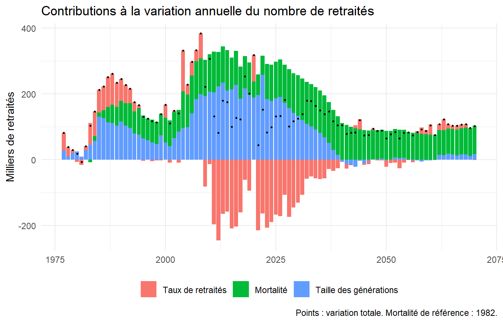
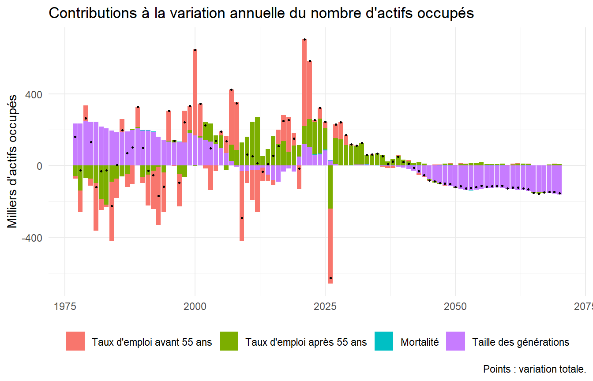
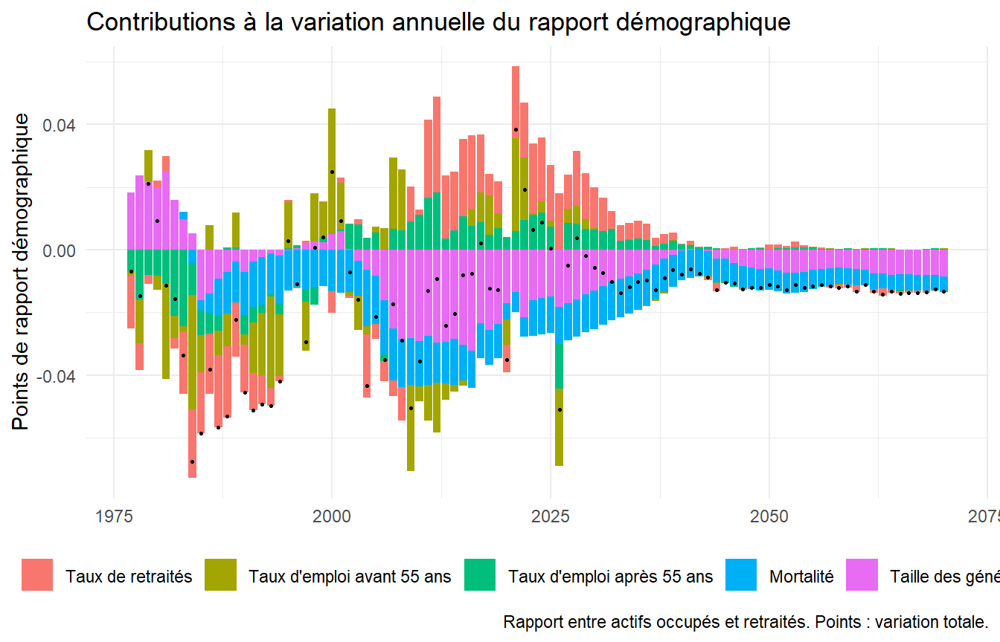
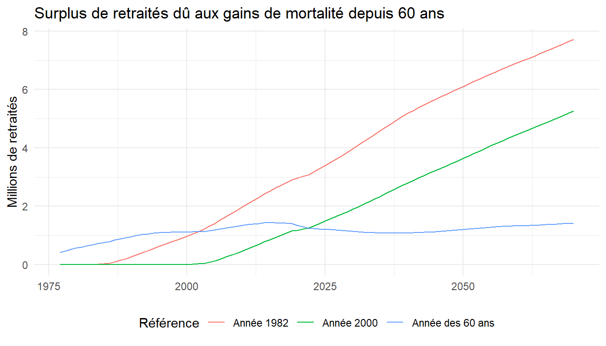

library(pilotretrtools)
library(dplyr)
#> Warning: le package 'dplyr' a été compilé avec la version R 4.4.3
library(ggplot2)
#> Warning: le package 'ggplot2' a été compilé avec la version R 4.4.3
base <- construire_base()
decomposition <- decomposer_evolutions(base, reference = mortalite_annee(1982))Décomposition des évolutions démographiques
Le nombre de retraités et le rapport entre actifs occupés et retraités évoluent sous l’effet de trois grands facteurs : la taille des générations qui arrivent aux âges de la retraite, l’allongement de la durée de vie, et les comportements d’activité et de départ à la retraite, eux-mêmes largement déterminés par la réglementation. Cette vignette décrit la décomposition calculée par decomposer_evolutions(), puis l’illustre pour le nombre de retraités, le nombre d’actifs occupés et le rapport démographique.
Principe du calcul
Un effectif, deux composantes
Le nombre de retraités (ou d’actifs occupés) une année \(t\) est la somme, sur les âges \(a\) et les deux sexes, de la population au 31 décembre multipliée par un taux (de retraités, ou d’emploi) :
\[N(t) = \sum_a P(t,a) \, \tau(t,a)\]
D’une année sur l’autre, à chaque âge, la variation de \(P \times \tau\) se partage exactement entre une variation du taux et une variation de la population, chacune pondérée par la moyenne de l’autre terme sur les deux années (notée par une barre) :
\[\Delta (P \tau) = \bar{P} \, \Delta \tau + \bar{\tau} \, \Delta P\]
Pondérer par des moyennes rend la décomposition indépendante de l’ordre dans lequel on considère les effets : on n’a pas à choisir entre « taux d’abord » et « population d’abord ».
Mortalité et taille des générations
La population d’une génération à un âge donné dépend de sa taille à 60 ans et de sa mortalité depuis 60 ans. Pour séparer les deux, on calcule pour chaque génération la population \(P^{ref}\) qu’elle aurait eue si sa mortalité à partir de 60 ans était restée celle d’une référence (par défaut, la mortalité de l’année 1982). L’écart \(G = P - P^{ref}\) est le surplus de population dû aux gains de mortalité depuis la référence. La variation de la population se décompose alors en :
\[\Delta P = \Delta G + \Delta P^{ref}\]
d’où la décomposition complète de la variation annuelle :
\[\Delta N = \sum_a \bar{P}(a) \, \Delta \tau(a) + \sum_a \bar{\tau}(a) \, \Delta G(a) + \sum_a \bar{\tau}(a) \, \Delta P^{ref}(a)\]
soit un effet des taux, un effet de la mortalité et un effet de la taille des générations. Ce dernier recouvre tous les déterminants de la taille des générations à 60 ans : nombre de naissances, migrations, mortalité avant 60 ans. Il inclut aussi les migrations après 60 ans.
En pratique, le surplus \(G\) est mesuré comme l’écart entre deux projections de la génération menées de la même façon à partir de 60 ans, l’une avec les quotients de mortalité effectifs, l’autre avec ceux de la référence (projeter_mortalite_reference()). Comparer directement la population observée à la projection de référence mêlerait aux gains de mortalité l’écart entre les décès observés et ceux que donne la formule à partir des quotients.
Le choix de la référence de mortalité
Mesurer l’effet de la mortalité par rapport à une référence fixe, plutôt que par rapport à la génération précédente, a deux conséquences :
- les effets annuels s’additionnent dans le temps : leur somme sur une période est égale à la variation, sur cette période, du surplus de retraités dû aux gains de mortalité. Avec la génération précédente comme référence, chaque année « oublierait » les gains acquis auparavant ;
- l’effet de la mortalité inclut l’application des gains cumulés depuis la référence à des générations de tailles différentes, et l’effet de la taille des générations est mesuré avec la mortalité de référence. Cette lecture est cohérente avec une logique de partage des gains d’espérance de vie par rapport à une situation de référence.
La contrepartie est que l’effet de la mortalité dépend de la référence et croît mécaniquement à mesure qu’on s’en éloigne. Trois références sont proposées :
| Fonction | Mortalité de référence |
|---|---|
mortalite_annee(1982) |
quotients d’une année donnée, appliqués après cette année |
mortalite_generation(1950) |
quotients d’une génération donnée, appliqués à toutes |
mortalite_annee_age(60) |
pour chaque génération, quotients de l’année de ses 60 ans |
L’âge à partir duquel la mortalité de référence s’applique (60 ans par défaut) est paramétrable (age_debut_mortalite).
Le rapport démographique
La variation du rapport démographique \(R = E / N\) (actifs occupés \(E\) sur retraités \(N\)) est décomposée de façon exacte par la méthode des moyennes logarithmiques (LMDI). La contribution d’un effet \(k\) s’écrit :
\[\Delta R_k = L(R) \times \left[ \Delta E_k / L(E) - \Delta N_k / L(N) \right]\]
où \(\Delta E_k\) et \(\Delta N_k\) sont les effets sur les actifs occupés et sur les retraités, et \(L\) la moyenne logarithmique des valeurs des deux années :
\[L(x, y) = (x - y) / (\ln x - \ln y)\]
Les contributions s’additionnent exactement à la variation du rapport. Les effets des taux sont distingués selon qu’ils portent sur les retraités ou sur l’emploi, et pour l’emploi avant et après 55 ans (age_seuil_emploi), pour isoler l’effet des réformes des retraites sur l’emploi des seniors.
Précautions
- La population doit être corrigée des ruptures de champ géographique (
corriger_champ(), fait par défaut parconstruire_base()) : sans cela, l’ajout des DROM en 1995 et de Mayotte en 2014 apparaîtrait comme un effet de la taille des générations. - Le passage des taux d’emploi observés aux taux projetés par le COR, entre 2025 et 2026, crée un saut de niveau qui apparaît comme un effet des taux d’emploi cette année-là (voir
vignette("ecarts-insee")).
Le nombre de retraités
donnees_graph_decomposition(decomposition, "retraites", annees = 1977:2070) |>
ggplot(aes(annee, valeur / 1000)) +
geom_col(aes(fill = effet)) +
geom_point(aes(y = variation / 1000), size = 0.6) +
labs(x = NULL, y = "Milliers de retraités", fill = NULL,
title = "Contributions à la variation annuelle du nombre de retraités",
caption = "Points : variation totale. Mortalité de référence : 1982.") +
theme_minimal() +
theme(legend.position = "bottom")
L’arrivée à 60 ans des générations nombreuses du baby-boom, à partir de 2006, porte l’effet de la taille des générations. Les réformes des retraites, qui réduisent les taux de retraités aux âges proches de l’âge d’ouverture des droits, se traduisent par des effets des taux négatifs. L’effet de la mortalité, positif, s’accroît à mesure que les gains de mortalité depuis 1982 s’accumulent, et devient le principal moteur de la hausse du nombre de retraités à long terme.
Sur une période, les effets s’additionnent :
periode <- function(debut, fin) {
decomposition |>
filter(annee > debut, annee <= fin) |>
summarise(periode = paste(debut, fin, sep = "-"),
variation = sum(d_nb_retraites),
taux = sum(d_nb_retraites_taux),
mortalite = sum(d_nb_retraites_mortalite),
taille = sum(d_nb_retraites_taille))
}
bind_rows(periode(1980, 2000), periode(2000, 2025), periode(2025, 2050),
periode(2050, 2070)) |>
mutate(across(-periode, ~ round(.x / 1e6, 2)))
#> # A tibble: 4 × 5
#> periode variation taux mortalite taille
#> <chr> <dbl> <dbl> <dbl> <dbl>
#> 1 1980-2000 3.29 0.77 0.97 1.54
#> 2 2000-2025 4.7 -2.15 2.45 4.41
#> 3 2025-2050 2.93 -1.22 2.75 1.39
#> 4 2050-2070 1.87 0.12 1.61 0.14(en millions de retraités)
Le nombre d’actifs occupés
donnees_graph_decomposition(decomposition, "actifs_occupes",
annees = 1977:2070) |>
ggplot(aes(annee, valeur / 1000)) +
geom_col(aes(fill = effet)) +
geom_point(aes(y = variation / 1000), size = 0.6) +
labs(x = NULL, y = "Milliers d'actifs occupés", fill = NULL,
title = "Contributions à la variation annuelle du nombre d'actifs occupés",
caption = "Points : variation totale.") +
theme_minimal() +
theme(legend.position = "bottom")
L’effet de la mortalité est ici faible, puisqu’il ne porte que sur les actifs occupés de 60 ans et plus. L’effet des taux d’emploi après 55 ans traduit notamment le recul des âges de départ à la retraite.
Le rapport démographique
donnees_graph_decomposition(decomposition, "rapport_demo",
annees = 1977:2070) |>
ggplot(aes(annee, valeur)) +
geom_col(aes(fill = effet)) +
geom_point(aes(y = variation), size = 0.6) +
labs(x = NULL, y = "Points de rapport démographique", fill = NULL,
title = "Contributions à la variation annuelle du rapport démographique",
caption = "Rapport entre actifs occupés et retraités. Points : variation totale.") +
theme_minimal() +
theme(legend.position = "bottom")
Sensibilité à la référence de mortalité
Le surplus de retraités dû aux gains de mortalité dépend de la référence retenue :
surplus <- function(reference, libelle) {
decomposer_evolutions(base, reference = reference) |>
transmute(annee, surplus = nb_retraites - nb_retraites_ref,
reference = libelle)
}
bind_rows(
surplus(mortalite_annee(1982), "Année 1982"),
surplus(mortalite_annee(2000), "Année 2000"),
surplus(mortalite_annee_age(60), "Année des 60 ans")
) |>
filter(annee >= 1977, annee <= 2070) |>
ggplot(aes(annee, surplus / 1e6, colour = reference)) +
geom_line() +
labs(x = NULL, y = "Millions de retraités", colour = "Référence",
title = "Surplus de retraités dû aux gains de mortalité depuis 60 ans") +
theme_minimal() +
theme(legend.position = "bottom")
Avec une année de référence, le surplus est nul jusqu’à cette année puis croît. Avec la mortalité de l’année des 60 ans, la référence est propre à chaque génération : le surplus ne mesure que les gains intervenus depuis que chaque génération a atteint 60 ans. Les quotients de mortalité n’étant disponibles qu’à partir de 1962, l’année de référence des générations nées avant 1902 est ramenée à 1962 : pour elles, seuls les gains intervenus depuis 1962 sont mesurés.